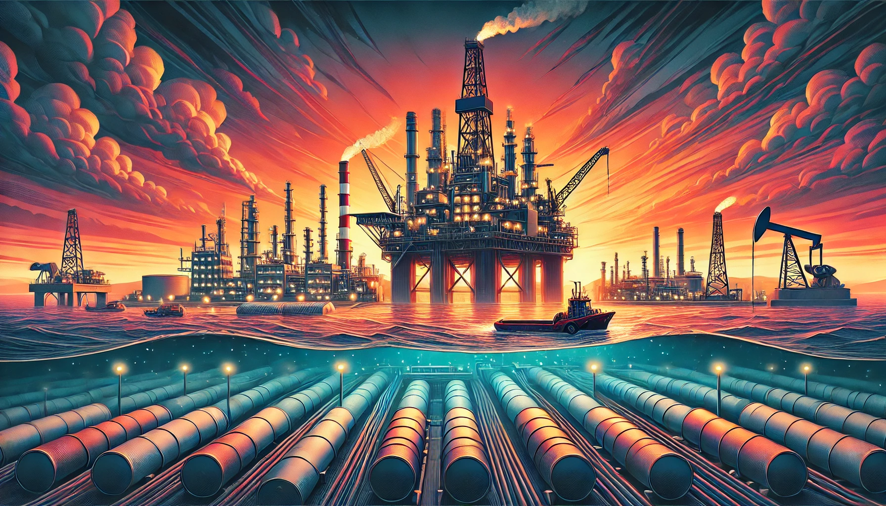
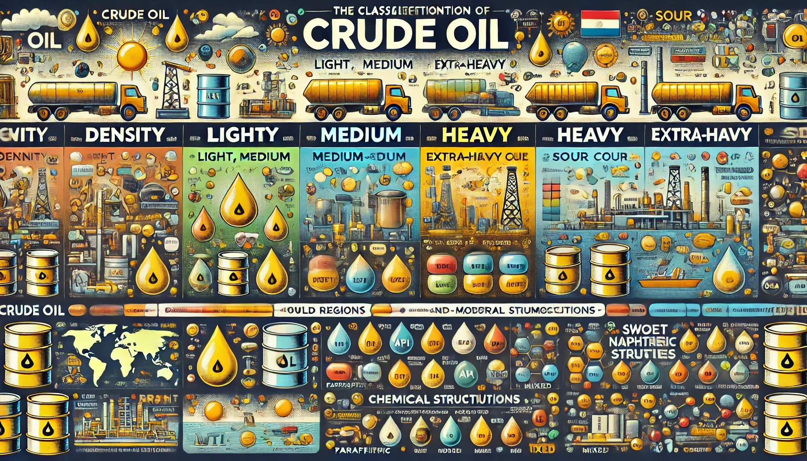

El petróleo es un líquido oscuro y espeso que se encuentra bajo la tierra o el fondo del mar. Está formado por restos de plantas y animales diminutos que vivieron hace millones de años y, con el tiempo, se transformaron por la presión y el calor bajo capas de roca.
Es una mezcla natural de sustancias químicas, principalmente hidrocarburos, que se usa como fuente de energía y para fabricar cosas como gasolina, plásticos y productos químicos. En pocas palabras, es como un "jugo fósil" que el mundo aprovecha para mover máquinas, fabricar objetos y calentar hogares.
El petróleo se clasifica según varias características que ayudan a entender su calidad, composición y utilidad. Estas clasificaciones principales son:
+Petróleo liviano: Tiene una densidad API alta (mayor a 31.1°). Es fácil de refinar y se utiliza para producir gasolina y diésel.
+Petróleo mediano: Densidad API entre 22.3° y 31.1°. Es intermedio en calidad y refino.
+Petróleo pesado: Densidad API entre 10° y 22.3°. Es más denso y requiere procesos complejos para su refinado.
+Petróleo extrapesado: Densidad API menor a 10°. Es muy espeso y difícil de procesar.
+Petróleo dulce: Contiene menos del 0.5% de azufre. Es más deseado porque produce menos contaminantes.
+Petróleo agrio: Contiene más del 0.5% de azufre. Es más corrosivo y requiere más tratamiento para su refinado.
El petróleo se nombra según el lugar donde se extrae, como:
+West Texas Intermediate (WTI): Liviano y dulce, extraído en Estados Unidos.
+Brent: Mezcla del Mar del Norte, usada como referencia mundial.
+Arabian Light: Proveniente de Arabia Saudita, de alta calidad.
+Maya: Extraído en México, es pesado y con alto contenido de azufre.
+Parafínico: Rico en hidrocarburos parafínicos, ideal para producir gasolina y lubricantes.
+Nafténico: Contiene más hidrocarburos cíclicos, útil para aceites lubricantes y productos químicos.
+Mixto: Una combinación de ambos, con aplicaciones variadas.
El petróleo es fundamental en nuestra sociedad porque es una de las principales fuentes de energía que impulsa el desarrollo moderno. Es la base para fabricar combustibles como la gasolina, el diésel y el queroseno, que permiten el transporte terrestre, aéreo y marítimo. Sin él, muchos sistemas de movilidad que conectan al mundo simplemente no funcionarían.
Además, el petróleo es materia prima para crear plásticos, fertilizantes, medicamentos, textiles sintéticos y productos químicos. Esto significa que está presente en cosas tan simples como empaques y tan complejas como dispositivos médicos o ropa deportiva.
También es clave en la generación de electricidad y en procesos industriales que producen bienes esenciales. En países con economías basadas en su exportación, el petróleo es una fuente importante de ingresos y empleo.
Sin embargo, su importancia también implica retos, como la necesidad de encontrar alternativas sostenibles debido a su impacto ambiental. A pesar de esto, sigue siendo un recurso crucial que sostiene muchas actividades humanas y económicas en todo el mundo.
El precio del barril de crudo se basa en diversos factores económicos, políticos y naturales que influyen en la oferta y la demanda global de petróleo. Estos son los principales elementos que lo determinan:
+Oferta: Depende de cuánto petróleo producen los países. Si los principales productores, como los de la OPEP (Organización de Países Exportadores de Petróleo), deciden reducir o aumentar la producción, el precio puede subir o bajar.
+Demanda: Está influenciada por el crecimiento económico y el consumo de energía. Si la economía mundial está en auge, la demanda aumenta y los precios tienden a subir.
Las tensiones políticas en regiones productoras de petróleo, como el Medio Oriente, pueden interrumpir el suministro y hacer que los precios se disparen debido al temor de escasez. Guerras, sanciones internacionales y conflictos sociales también afectan el mercado.
El petróleo no cuesta lo mismo extraerlo en todas partes. En algunos lugares, como Arabia Saudita, los costos son bajos, mientras que en otros, como Canadá o Venezuela, extraer petróleo pesado o de arenas bituminosas es más caro. Estos costos influyen en los precios mínimos necesarios para que la producción sea rentable.
Los diferentes tipos de petróleo tienen precios distintos. Por ejemplo, el crudo liviano y dulce (como el WTI o el Brent) es más valioso porque se refina con mayor facilidad, mientras que el crudo pesado o agrio requiere procesos más costosos.
El petróleo se comercia como un producto en mercados internacionales. Factores como la especulación en bolsas de valores, el tipo de cambio del dólar (moneda en la que se cotiza el crudo) y los futuros del petróleo (contratos para compra y venta a futuro) impactan los precios de forma inmediata.
+Desastres naturales: Huracanes o terremotos en zonas de producción pueden interrumpir el suministro y aumentar los precios.
+Tecnologías y energías alternativas: Si se desarrollan fuentes de energía más baratas o eficientes, la demanda de petróleo puede disminuir y con ello los precios.
PARA CONOCER EL PRECIO ACTUAL POR BARRIL DE PETRÓLEO PUEDES CONSULTARLO DANDO CLICK EN LA SIGUEINTE IMAGEN